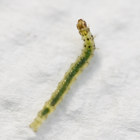
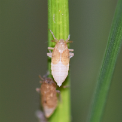
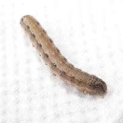

Our research focuses on how crop plants perceive, respond to, and ultimately resist insect herbivory, and how these defense mechanisms can be translated into sustainable pest management strategies for modern agriculture.
Insect pests remain one of the most serious constraints on global food production. Climate change, intensive farming systems, and long-term reliance on chemical insecticides have accelerated the evolution of insect adaptation and resistance, posing significant threats to crop yield and food security. Understanding plant-mediated resistance mechanisms is therefore essential for developing durable and environmentally sound solutions.
At the Crop Resistance to Insects Lab, we investigate plant–insect interactions across molecular, physiological, ecological, and evolutionary scales, with the goal of bridging fundamental biology and applied pest management.
Research Interests
Our core research themes include:
Mechanisms of Host-Plant Resistance
We dissect resistance traits such as antixenosis (non-preference) and antibiosis, and evaluate their effects on insect behavior, development, survival, and population dynamics.
Plant–Insect Interactions
We examine how insect feeding triggers changes in plant physiology, metabolism, and gene expression, and how these responses are integrated through plant signaling networks.
Resistance to Major Agricultural Pests
Using key pest systems such as the brown planthopper in rice and the fall armyworm in maize, we evaluate resistant germplasms under both laboratory and field conditions.
Integrated Pest Management and Sustainable Agriculture
Our work aims to integrate host-plant resistance with ecological and agronomic practices to reduce pesticide dependence and enhance long-term agroecosystem resilience.



OUR vision
By elucidating the mechanisms underlying crop resistance to insect pests, we aim to advance fundamental knowledge of plant defense biology while contributing practical insights for crop improvement and sustainable pest management.